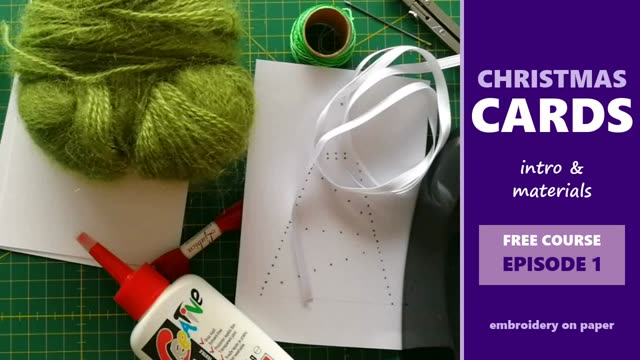
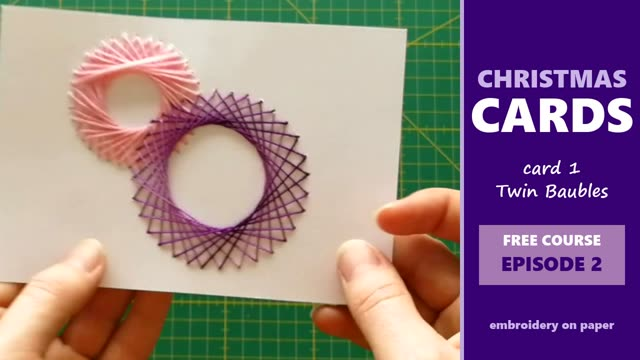
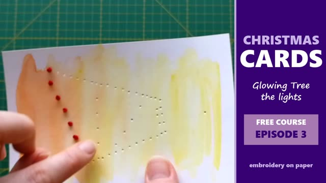
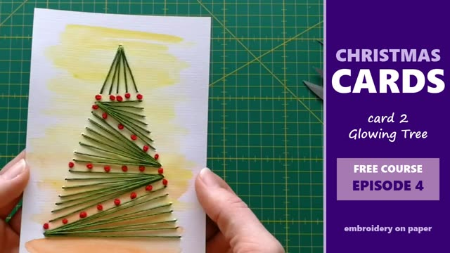
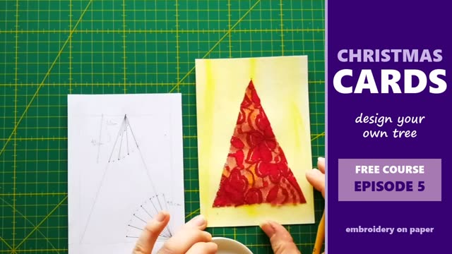
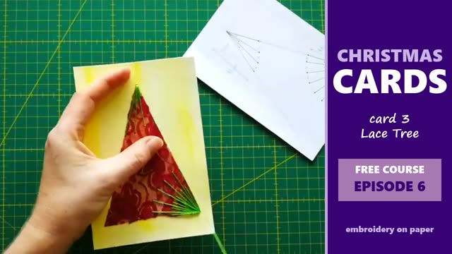

Embroidered Christmas Cards on Paper
Let's embroider Christmas cards on paper! 🎄 No fabric, no hoop, just paper, a needle and a thread. This is my whole Christmas cards course. I made it a few years ago and now it's free :)
📄 Download the free patterns (PDF)
Real size, printable. One page per card.
You will make 3 cards
- Twin Baubles: two Christmas balls, one in a thread that changes color
- Glowing Tree: watercolor background, French knot lights and a green tree
- Lace Tree: a tree you design yourself, with a piece of lace
Materials
- Paper, 220 g or more (thinner paper bends)
- Embroidery thread (I use 6-strand cotton), a thin ribbon or even wool
- Needle with an eye big enough for your thread
- Small scissors
- Masking tape (instead of knots)
- Compass, awl or a sharp needle for the holes + a piece of felt underneath
- Optional: PVA glue + brush, ribbon, lace, watercolors, a base card (I used mixed media paper), ruler + craft knife
Use what you already have at home, you don't need to buy anything new.
Prefer short lessons? The same course in 6 episodes

Episode 1: Intro & materials

Episode 2: Twin Baubles

Episode 3: Glowing Tree, part 1

Episode 4: Glowing Tree, part 2

Episode 5: Lace Tree, part 1

Episode 6: Lace Tree, part 2 & tips
More
🪢 More about French knots: French knot with 1, 3 and 6 strands
✉️ More cards on paper: Embroidering Beautiful Cards, free course
Show me your cards: tag me on Instagram @vesycreates. And tell me, which pattern should I make next? 💜